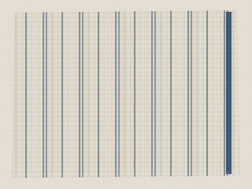
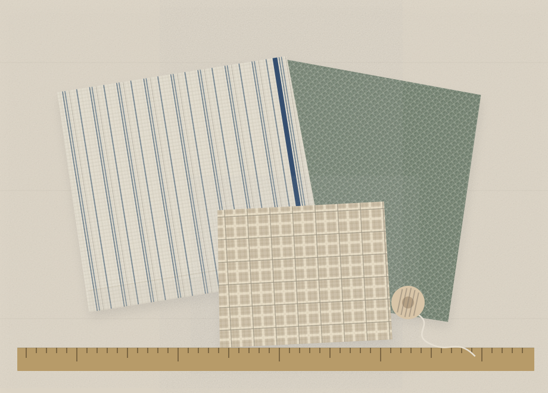
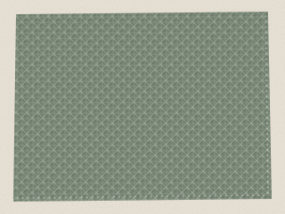
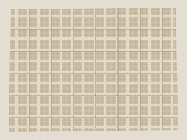
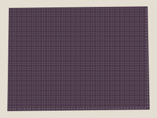
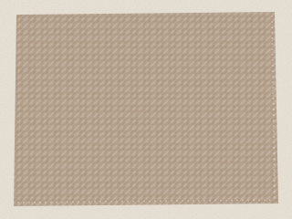
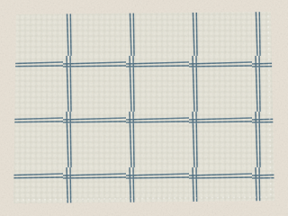

Choose this fabricGM01
GBP 14.00 / mÉcru stripe with a narrow indigo selvedge
145 cm wide · Cotton
Fabric remnants for your next project
Stripes for a set of kitchen cloths. A little linen for something new. Put your favourite cuts together and see what they add up to.
Make your cut list Meet the six fabrics
The sample catalogue
Six fabrics to work with. Choose from 0.25 to 5 metres of each in quarter-metre steps. Every width, fibre and price stays with your list.

Choose this fabricGM01
GBP 14.00 / m145 cm wide · Cotton

Choose this fabricGM02
GBP 18.00 / m150 cm wide · Linen

Choose this fabricGM03
GBP 22.00 / m140 cm wide · Cotton / linen

Choose this fabricGM04
GBP 16.00 / m148 cm wide · Cotton

Choose this fabricGM05
GBP 20.00 / m152 cm wide · Linen

Choose this fabricGM06
GBP 24.00 / m142 cm wide · Cotton
Original fabric illustrations; colours and textures are illustrative. These fictional prices and stock do not describe real goods.
Name your project, choose fabrics and enter the lengths you need.
Prepare a list with a cost for each cut and exact totals for length and cost.
Download the exact text, or deliberately keep one copy in this browser to recover later.
A small piece can be
the start of something